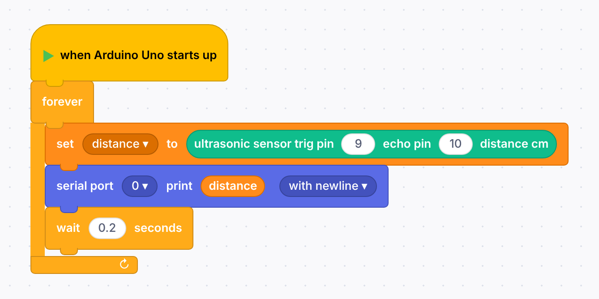

🎬فيديو الشرح
📖الشرح حسب العمر
🧒
مثل الخفّاش: يصرخ صرخة لا نسمعها وينتظر صداها ليعرف كم يبعد الحائط.
مستشعر يقيس المسافة بالموجات فوق الصوتية. يرسل موجة 40kHz من «T» وتعود بعد ارتطامها بالجسم إلى «R». يُستعمل في روبوتات تجنّب العوائق وأنظمة الإنذار.
مستشعر يقيس المسافة بالموجات فوق الصوتية. يرسل موجة 40kHz من «T» وتعود بعد ارتطامها بالجسم إلى «R». يُستعمل في روبوتات تجنّب العوائق وأنظمة الإنذار.
- المدى 2–400cm، والدقة ≈ 3mm
- المسافة (cm) = زمن الصدى (µs) ÷ 58
- سرعة الصوت ≈ 343m/s
- زاوية القياس ≈ 15°
🖼️الصورة التوضيحية
- 1المرسل Tيرسل 40kHz
- 2المستقبل Rيسمع الصدى
- 34 أطرافVCC Trig Echo GND
- 4الكريستاليضبط التوقيت
- 5الموجةلا يسمعها الإنسان
⚙️كيف تعمل؟
- نرسل نبضة 10µs على Trig
- الحساس يطلق 8 موجات 40kHz
- Echo يبقى HIGH حتى يعود الصدى
- نقيس الزمن ← نحسب المسافة
🔌التوصيل مع Arduino UNO
| طرف القطعة | ملاحظة | منفذ الأردوينو |
|---|---|---|
| VCC | 5V | 5V |
| Trig | إطلاق | D9 |
| Echo | صدى | D10 |
| GND | أرضي | GND |
💻البرمجة: Arduino IDE و mBlock 5
void setup() { Serial.begin(9600); pinMode(9, OUTPUT); pinMode(10, INPUT); } void loop() { digitalWrite(9, LOW); delayMicroseconds(2); digitalWrite(9, HIGH); delayMicroseconds(10); digitalWrite(9, LOW); long t = pulseIn(10, HIGH); Serial.println(t / 58); // cm delay(200); }

في mBlock 5: الأجهزة ← أضف ← Arduino Uno، اختر وضع رفع (Upload)، ثم اتصال واختر منفذ COM، ركّب الكتل كما في الصورة واضغط رفع.
✅سؤال سريع
كيف نحسب المسافة بالسنتيمتر؟